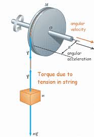

This is the rotational analog of Newton’s Second Law of motion. In linear motion, the net force causes linear acceleration. In rotational motion, the net torque causes angular acceleration.
What It Means
$\tau_{\text{net}}$ is the total torque acting on a rigid object.
$I$ is the moment of inertia — a measure of how much the object resists angular acceleration.
$\alpha$ is the angular acceleration in radians per second squared.
Just like $F = ma$, if you know the torque and the moment of inertia, you can predict how fast something will spin up or slow down. This equation is only valid if $I$ is constant — meaning the mass distribution of the object doesn’t change over time.

Deriving the Equation
Start with Newton's second law for a small mass on a rotating object:
A force of $10 \, \text{N}$ is applied tangentially at a radius of $0.2 \, \text{m}$ from the center of a solid wheel with $I = 1.5 \, \text{kg} \cdot \text{m}^2$.
Torque is not the same as force. Torque depends on both the force and where it is applied relative to the axis.
Moment of inertia is not mass. It depends on the mass and how that mass is distributed relative to the axis of rotation.
Angular acceleration doesn't mean high speed. A large $\alpha$ means fast change in $\omega$, not necessarily high $\omega$.
Watch this video to see how moment of inertia affects angular acceleration in a race:
Summary
Newton’s Second Law for rotation links the net torque on an object to its angular acceleration through the moment of inertia. Just like in linear motion, more torque results in more acceleration — unless the object resists change due to its rotational inertia. This principle governs the motion of spinning wheels, rotating rods, pulleys, and more.
Takeaways
More torque → more angular acceleration.
Higher moment of inertia → harder to rotate.
$\alpha \propto \tau$, but $\alpha \propto \frac{1}{I}$
This equation assumes no slipping and that torque is calculated relative to the axis of rotation.